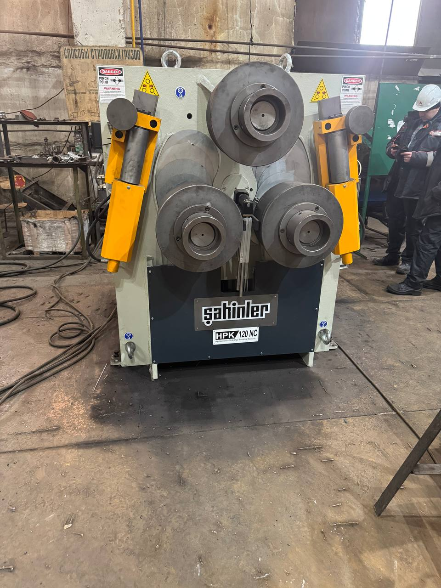
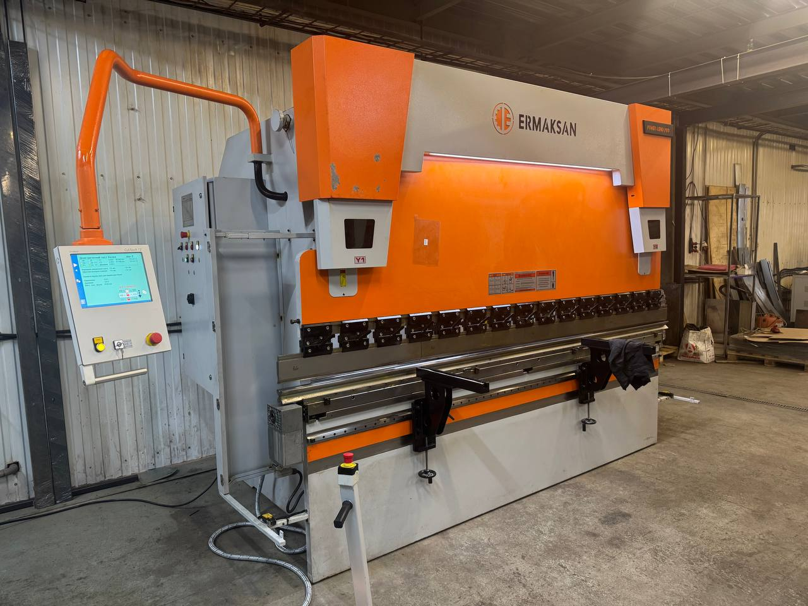
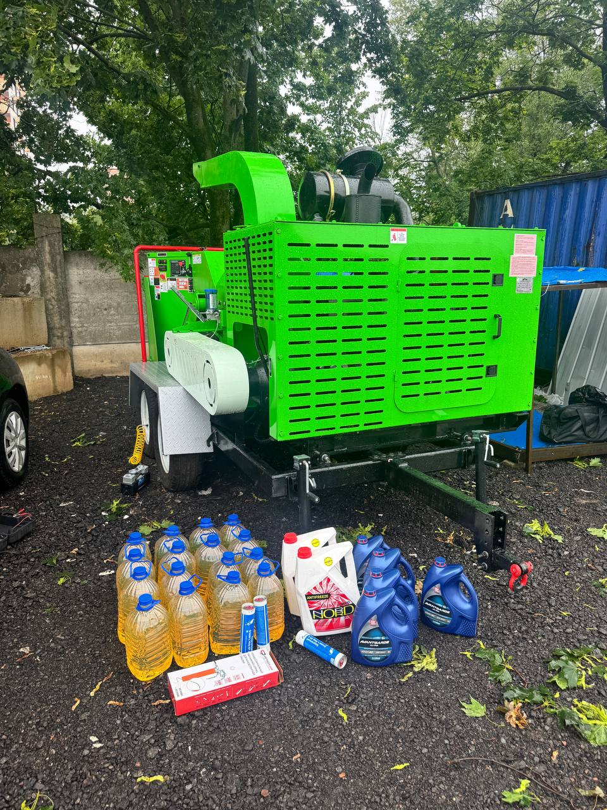
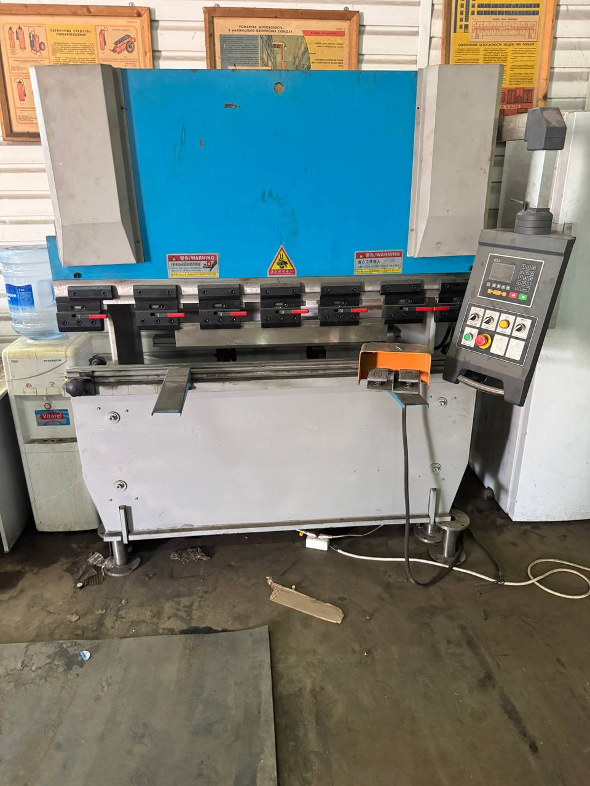

За 15 лет работы с листогибочным оборудованием мы видели сотни станков — от механических Ermaksan до гидравлических LVD и ADH с ЧПУ. Каждый раз одна и та же картина: владелец замечает проблему, но откладывает ремонт, пока станок не встанет полностью. Тогда стоимость восстановления вырастает в 3-5 раз по сравнению с точечным ремонтом на ранней стадии.
Вот 7 признаков, по которым можно определить, что листогибу пора на ремонт. Не «когда-нибудь», а именно сейчас.

1. Угол гиба не совпадает с заданным
Это первый и самый заметный признак. Вы выставили 90° на стойке ЧПУ, а заготовка выходит с отклонением в 1-2 градуса. Причина — износ рабочих кромок пуансона и матрицы, ослабление зажимного механизма или неисправность датчика обратной связи.
Что происходит на практике: Клиент из Подольска привез листогиб Ermaksan на диагностику после жалоб оператора, что «угол плывёт». При проверке выяснилось, что матрица изношена неравномерно — с одной стороны выработка составляла 0.8 мм, с другой — 0.2 мм. Результат: заготовки на одной стороне гнулись правильно, на другой — с переломом. Замена матрицы обошлась в 22 000₽. Если бы затянули — потребовалась бы замена helea и регулировка рамы, что стоит от 80 000₽.
- Отклонение угла более 0.5° от заданного — повод для диагностики
- Неравномерный гиб по длине — признак износа рабочих кромок
- Возврат упругости не соответствует ожиданиям — проверяйте зазор матрицы
2. Посторонние шумы при работе
Исправный листогиб работает ровно — гул гидравлического насоса, мягкое касание металла, и всё. Появление стуков, скрипов, визга — это не «особенности модели», а симптом конкретных проблем:
- Стук при ходе вниз — износ подшипников скольжения в направляющих или ослабление крепежа рамы
- Скрип при гибе — недостаточная смазка рабочих поверхностей пуансона
- Визг гидравлики — завоздушивание системы, подсос воздуха через повреждённые уплотнения
- Ритмичный стук — проблема с шатунным механизмом или износ кулачков
Из практики: На листогибе ADH 2513 оператор месяц игнорировал стук в приводе. Когда станок окончательно встал, выяснилось, что подшипник главного цилиндра рассыпался, повредив шток. Замена штока + подшипника + уплотнений = 67 000₽ и 3 дня простоя. При своевременной замене подшипника стоимость работ составила бы около 8 000₽ с запчастями.

3. Масляные подтёки под станком
Любое гидравлическое оборудование «потеет» в норме — лёгкая влажность на штуцерах допустима. Но если на полу регулярно появляются лужи, а уровень масла в баке падает быстрее обычного — это прямой путь к катастрофе.
Типичные места утечек:
- Стыки шлангов и штуцеров — ослабление, износ прокладок
- Уплотнения главного цилиндра — самая дорогая утечка
- Соединения распределителей — деформация уплотнительных колец
- Проблемы с баком — трещины в сварных швах
Кейс: Заказчик из Москвы обратился с жалобой, что «масло кончается». При осмотре обнаружили подтёк на главном цилиндре — сальник пропускал масло по штоку. Визуально казалось, что «немного капает». Но за смену уходило 2 литра гидравлического масла. Замена сальника + уплотнений = 15 000₽. Затяни — и цилиндр выходит из строя полностью, замена от 120 000₽.
4. Станок стал работать медленнее
Вы заметили, что цикл гибки, который раньше занимал 4 секунды, теперь длится 5-6 секунд? Это не «просто старость». Замедление хода — признак:
- Засорения фильтров гидравлической системы
- Износа гидронасоса — падение производительности
- Закисания распределителей — каналы не открываются полностью
- Падения уровня масла в баке — насос захватывает воздух
Реальный пример: На листогибе Stalex оператор жаловался, что станок «тормозит». Диагностика показала: фильтр грубой очистки забит на 70%. Насос работал с перегрузкой, температура масла выросла до 65°C (норма — 45-55°C). Замена фильтра — 3 500₽. Если бы насос проработал ещё месяц при таких температурах — капитальный ремонт гидростанции от 95 000₽.

5. Ошибки на стойке ЧПУ
Современные листогибы работают на стойках Delem, Cybelec, Estun или аналогичных. Появление ошибок на экране — это не «глюк», а конкретный код конкретной неисправности:
- Ошибки сервоприводов — проблемы с обратной связью, износ редукторов, неисправность энкодеров
- Ошибки датчиков — выход из строя концевиков, датчиков положения
- Сбои параметров — сброс настроек из-за проблем с питанием или памятью
- Ошибка связи — обрыв кабелей, окисление контактов
Важно: Часто операторы просто перезагружают стойку при появлении ошибки. Это маскирует проблему, но не решает её. Если ошибка повторяется — это системная неисправность, требующая диагностики.
Пример из практики: На листогибе с Delem DA-58T появлялась ошибка «Position error» каждые 10-15 циклов. Оператор перезагружал стойку и продолжал работу. Через неделю станок окончательно встал. Причина: повреждённый кабель энкодера главного цилиндра. Замена кабеля — 12 000₽. Но за неделю «перезагрузок» оператор испортил 47 заготовок на сумму около 35 000₽.
6. Вибрация рамы при работе
Если вы чувствуете, что станок «ходит» по полу, или видите, как вибрируют заготовки на подающем столе — это серьёзный сигнал:
- Износ направляющих — увеличение зазоров
- Деформация рамы — следствие перегрузок или неправильной эксплуатации
- Проблемы с демпферами —失去了 гашения вибраций
- Неправильная установка — перекос опор
Кейс: Листогиб Durma ADS нестабильно стоял на полу — при гибе «гулял» на 2-3 мм. Причина — ослаблены анкерные болты крепления к фундаменту + износ резиновых демпферов. Восстановление — 18 000₽. Если бы рама работала в таком режиме дальше — трещина в раме, которую уже не починить без полной сварки.

7. Появление «памяти» на заготовках
На表面ности заготовок остаются следы, вмятины, царапины, которых раньше не было. Это признак:
- Износа или повреждения рабочих кромок пуансона/матрицы
- Попадания металлической стружки между рабочими поверхностями
- Коррозии на рабочих поверхностях из-за отсутствия смазки
- Износа направляющих — заготовка «шарахает» в стороны
Из практики: На листогибе SAHINLER на алюминиевых заготовках появились продольные царапины. Причина — матрица из калёной стали имела микротрещину от усталости. Стружка забивалась в трещину и «пила» поверхность каждой заготовки. Замена матрицы решила проблему. Стоимость: 25 000₽. А сколько заказов было испорчено — посчитать сложно.
Чек-лист: проверьте свой листогиб за 15 минут
Вот быстрый алгоритм, который поможет вам оценить состояние станка:
- Визуальный осмотр: масло на полу, состояние шлангов, видимые повреждения
- Проверка уровня масла: должен быть между метками MIN и MAX
- Запуск на холостом ходу: послушайте на посторонние шумы
- Контрольный гиб: сделайте 3-5 гибов и измерьте углы
- Проверка стойки ЧПУ: есть ли ошибки в логе событий
- Измерение времени цикла: сравните с паспортными данными
- Осмотр заготовок: нет ли новых следов на表面ности
Если хотя бы 2 из 7 пунктов вызывают вопросы — пора вызывать специалиста. Чем раньше вы обратитесь, тем дешевле обойдётся ремонт.
Сколько стоит диагностика
Мы проводим бесплатную первичную консультацию по телефону. Выезд мастера для диагностики на объект по Москве и МО — от 3 000₽. Диагностика включает:
- Визуальный осмотр всех систем
- Проверку гидравлики — давление, температура, утечки
- Контроль электроники — чтение ошибок, проверка датчиков
- Износостойкость рабочих кромок — замеры зазоров
- Составление дефектного акта с перечнем необходимых работ
На основании диагностики мы предоставляем точную смету — без «открытых позиций» и скрытых платежей. Вы точно будете знать, сколько стоит ремонт и сколько времени он займёт.
Заказать диагностику листогиба
Не ждите, пока станок встанет полностью. Наши мастера выедут на объект, проведут полную диагностику и составят план ремонта. Бесплатная консультация по телефону!
Позвонить: 8 (993) 908-98-37Или напишите в WhatsApp — ответим за 15 минут
Читайте также: 5 признаков того, что вашему листогибу срочный ремонт | Ремонт листогибов — услуги